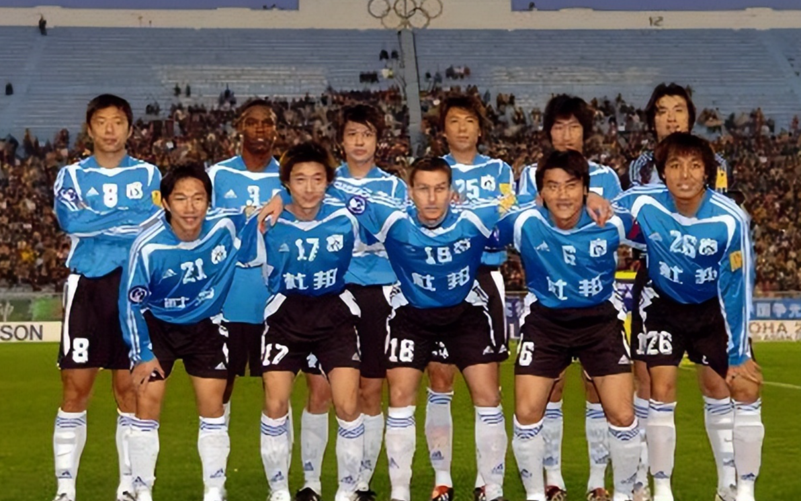

At the end of 1993, the Chinese Football Association decided to launch commercial reforms to save the deteriorating football scene in some areas. With more and more players returning from the Liaoning provincial team to the Dalian city team, and with Wanda Group investing, Dalian Wanda Football Club was officially founded in March 1994, becoming one of the 12 inaugural teams in China's top-tier A-level league (the predecessor of the CSL).
In 1994, Dalian Wanda FC won the championship of the very first Chinese Jia-A League.
In 1995, Dalian Wanda FC narrowly lost 0-1 to Shanghai Shenhua in the 8th round of the league. They ended up just 2 points behind Shanghai Shenhua overall, finishing as the runner-up in that year's Chinese Jia-A League.
From 1996 to 1997, Dalian Wanda FC went unbeaten for 55 matches across seasons, winning two league titles and two cup championships, a legendary feat in Dalian football that can’t be replicated. Interestingly, this 55-match unbeaten streak started with a narrow 0-1 loss in the 1995 season and ended with a 2-3 defeat in the 1997 season.
In 1998, due to a coaching change, Dalian started off poorly. But in the last seven rounds, they grabbed 9 points in a row (back then a win counted for 2 points) and managed to overtake Shandong FC, winning both the league and the cup. At the same time, they also achieved three consecutive league and cup wins. This is considered the first and highest peak of Dalian football. On the Asian level, they also finished as runners-up. Domestically, star player Sun Jihai joined Crystal Palace in the English Championship for £400, and later moved to Manchester City.
In 1999, due to unfair treatment in the cup competition, they were knocked out in the semifinals. This also indirectly affected their mentality in the league, and they only finished third. At the same time, they reached the semifinals of the Asian Champions League.
In 2000, 100% of the team's assets were acquired by Shide, a subsidiary of the Wanda Group, and the club was renamed Dalian Wanda Shide FC. That season, they dominated with the fewest goals conceded in the history of China's professional league and a record number of goals scored at the time, finishing 10 points ahead of second-place Beijing FC and clinching the title early, achieving another double championship. They also won the Asian runner-up spot. No one expected that the next double champion title would take 25 years to arrive.
Won the league championship in 2001, runner-up in the cup, and made it to the AFC Champions League semifinals
In 2002, they won the league championship again, while finishing as runners-up in both the cup and the AFC Champions League. They achieved their second consecutive league three-peat.
In 2003, we were runners-up in both the League Cup and the league, and reached the semifinals in the AFC Champions League.
In 2004, the Jia-A League was renamed the Chinese Super League. Because the team expressed dissatisfaction with the reform at the start of the season, the Football Association deducted 6 points from them. That season, they only finished third in the league, were runners-up in the cup, and reached the semifinals of the AFC Champions League.
In 2005, the team won its eighth in history, and so far its last top league championship, reached the semifinals of the cup, and the semifinals of the AFC Champions League.